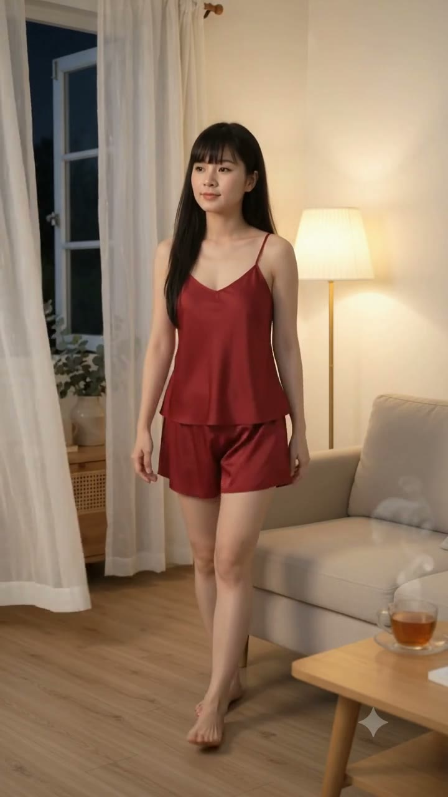

Bộ lụa đỏ đô WANNABE BS612: đi ngủ mát mềm mà vẫn quyến rũ

Tối nay đi ngủ, Lisa mặc bộ lụa đỏ đô WANNABE BS612 — áo 2 dây cổ V lụa satin, quần đùi, màu đỏ đô sang chảnh. Satin mát, thoải mái mà vẫn quyến rũ. Bạn chấm bộ này mấy điểm?
Đọc trước khi mua: bài viết này là gợi ý phối đồ lấy cảm hứng từ các mẫu đang bán chạy trên Shopee. Lisa là nhân vật AI, nên bài viết không phải bài đánh giá sản phẩm Lisa đã mặc thật hay đã dùng thử. Giá, chất liệu và size cần kiểm tra lại trên trang bán trước khi mua. Link mua hàng:
· Bộ lụa đỏ đô WANNABE BS612, shop WANNABE (Shopee Mall) — 249.000đ, 4,9 sao (141 đánh giá), đã bán 937.